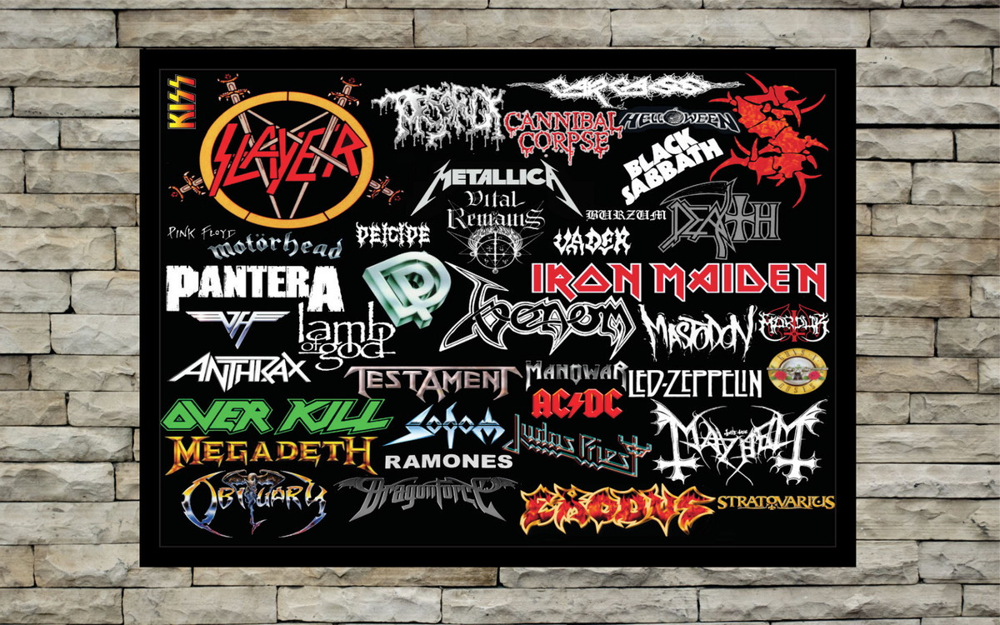
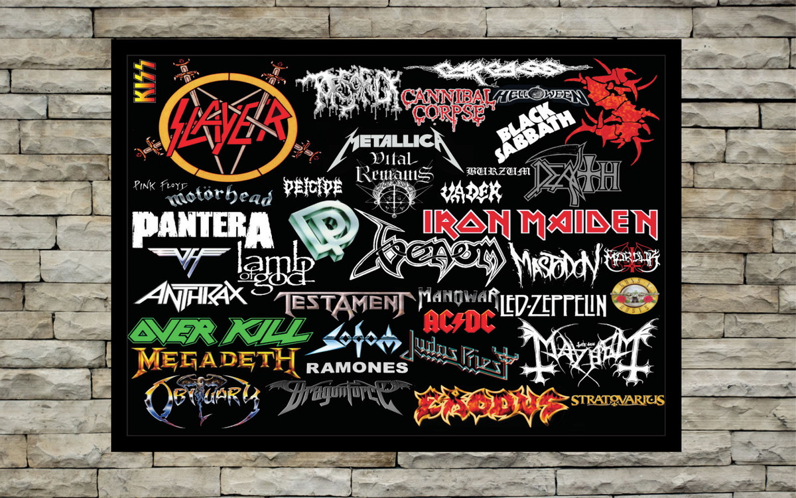

|  |
un género musical que surgió a fines de los sesenta. Se caracteriza por ser un ritmo potente que se toca a un volumen alto y con una distorsión del sonido intensa y el uso de amplificadores, acompañado por voces fuertes que generalmente tienen un registro más alto.
Sus solos de guitarra eléctrica son imponentes y se ejecutan con un virtuosismo característico y a una velocidad sorprendente. Además, los bajos y la batería también tienen un papel fundamental.
Por otro lado, las letras del heavy metal suelen hacer críticas hacia la sociedad y muchas veces abordan temas de protesta sobre prácticas socialmente aceptadas, como críticas hacia la corrupción política y la religión, favoritismo hacia el uso de drogas y el sadismo, entre otros.
|  |